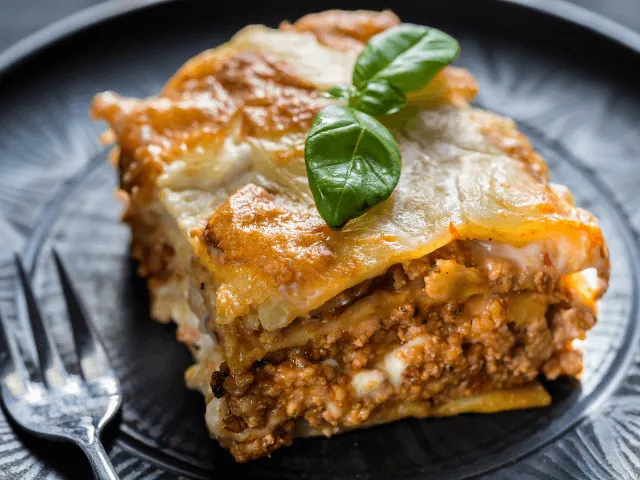
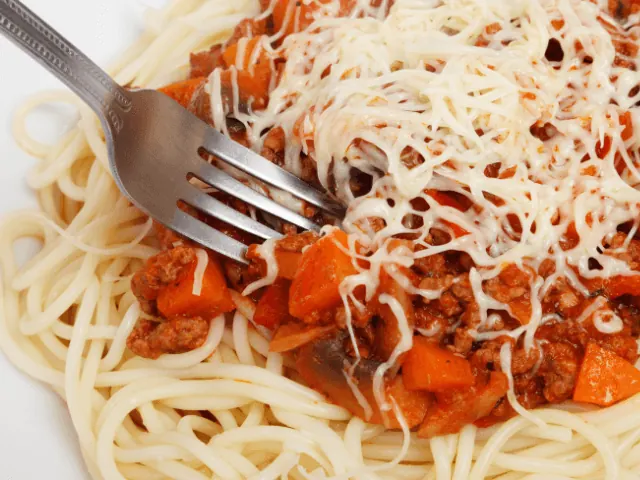

Culinair Genieten in Italiaanse Sfeer? Probeer Deze Restaurants
Gepubliceerd op 15 februari 2023, bijgewerkt op 20 oktober 2023
Onderdeel van de gids Restaurants in Nijmegen

De Italiaanse keuken, de meeste van ons zijn er dol op. Pizza’s, pasta’s en nog veel meer, er is zo veel keuze. Wanneer je in een Italiaans restaurant gaat eten, wil je natuurlijk wel de smaak én sfeer van Italië herkennen. De beste ingrediënten en de échte gemoedelijke Italiaanse sfeer, dat is waar jij naar op zoek bent. Wij begrijpen dat maar al te goed. Wij deden zodoende onderzoek naar het beste Italiaanse restaurant in Nijmegen. Zodat jij één van deze unieke Italiaanse tentjes een bezoekje kunt brengen.
Restaurant Merano is één van de oudste Italiaanse restaurants van ons land, en dat is dan ook terug te zien aan de unieke sfeer die hier hangt. Nog een pareltje in Nijmegen is restaurant Pasta e Fagioli. Deze tent behoort zelfs tot één van de beste Italiaanse restaurants van Nederland. Ook restaurants Romagna en Trattoria la Dolce Vita zijn echte aanraders!
Bevind jij je in de buurt van Nijmegen, en zoek je een goed Italiaans restaurant? Dan dien je onze lijst met beste Italiaanse restaurants in Nijmegen absoluut door te nemen. Wij weten namelijk zeker dat hier ook voor jou een geschikte plek tussen zit. We nemen diverse restaurants onder de loep, en staan kort stil bij zowel het menu als de sfeerbeleving in de verschillende restaurants. Hopelijk kun jij op basis hiervan een weloverwogen keuze maken wanneer je Italiaans gaat eten in Nijmegen.
Overzicht Italiaanse Restaurants in Nijmegen
De leukste Italiaanse restaurants in Nijmegen
Bezoek jij de bruisende stad Nijmegen, en weet je nog niet wat je wilt eten? Dan is een Italiaans restaurant altijd een goed idee. Onderstaand bespreken we een aantal Italiaanse restaurants in Nijmegen. Iedere tent heeft zo zijn eigen kwaliteiten en specialiteiten. Laten we deze eens samen onder de loep gaan nemen.
· Merano
In de Lange Hezelstraat, de oudste winkelstraat van Nijmegen, vind je het knusse restaurant Merano. Het restaurant bevindt zich al sinds 1940 op deze plek in Nijmegen. De authentieke Italiaanse sfeer is hier duidelijk voelbaar. Deze intieme huiselijke sfeer is absoluut kenmerkend voor dit restaurant.
Bij restaurant Merano kun je terecht voor diverse authentieke Italiaanse gerechten. Van een knapperige bruschetta tot een heerlijke zachte pasta, het menu is werkelijk waar van alle markten thuis. Ook verschillende Italiaanse vleeswaren staan op het menu. Maar ben jij vegetariër? Geen paniek! Je hebt ook keuze uit diverse vegetarische gerechten. Kortom, iedereen is welkom in dit sfeervolle restaurant.

· Pasta e Fagioli
Pasta e Fagioli is zonder twijfel één van de bekendste Italiaanse restaurants in Nijmegen. Sterker nog, het restaurant behoort tot één van de beste Italiaanse restaurants in Nederland. Dat belooft dus wat!
De eigenaar van Pasta e Fagioli is een échte Italiaan, en kookt de meest klassieke Italiaanse gerechten met liefde en passie. Dit proef je simpelweg direct terug in het eten. De menukaart wisselt regelmatig, waardoor je hier als gast telkens weer verrast wordt. Ook een prachtige Italiaanse wijn ontbreekt natuurlijk niet op de kaart. Zo geniet jij dus volop van de meest bijzondere smaken uit Italië.

· Romagna
Het derde restaurant op onze lijst is Romagna. Dit restaurant ligt midden in het centrum van Nijmegen. Het is voor toeristen dus de ideale plek om te genieten van al het lekkers dat de Italiaanse keuken te bieden heeft.
Romagna staat bekend om zijn grote aanbod in zowel authentieke gerechten als dranken. Een risotto met zeevruchten, pasta met paddenstoelen of een hoogwaardig stukje vlees van de gril, de mogelijkheden zijn eindeloos. Combineer één van deze gerechten met een verfrissend biertje of heerlijk glas wijn, en jouw avond kan niet meer stuk!
Vegetariërs of veganisten in jullie midden? Romagna geeft gehoor aan ieders wensen. Dat is absoluut uniek te noemen voor een traditioneel Italiaans restaurant. Romagna bezorgt bovendien ook maaltijden thuis, voor het geval je niet in staat bent om het restaurant fysiek te bezoeken.

· Trattoria la Dolce Vita
Nog een bekend restaurant in hartje Nijmegen is Trattoria la Dolce Vita. Dit restaurant is vooral geliefd vanwege zijn vriendelijke bediening, gezellige sfeer en natuurlijk de heerlijke menukaart. Van een heerlijk plankje antipasti tot een overheerlijke pasta, de mogelijkheden zijn groots.
Trattoria la Dolce Vita maakt gebruik van de beste ingrediënten, die resulteren in de allerlekkerste Italiaanse gerechten. Bij dit gezellige restaurant kun je bovendien ook een Italiaanse proeverij boeken. Heerlijke wijnen in combinatie met diverse thema’s uit de Italiaanse keuken, dat wordt zonder twijfel genieten!
MEER RESTAURANT INSPIRATIE NODIG?
restaurants in nijmegenPizza en Italiaans eten in Nijmegen
Zin om te beginnen? In onze bedrijvengids vind je alle 52 pizzeria's en Italiaanse restaurants in Nijmegen, met openingstijden, kenmerken en een kaart.
Bekijk alle 52 pizzeria's en Italiaanse restaurants in Nijmegen
Heb je zelf een pizzeria? Laat je hier uitlichten.